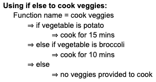
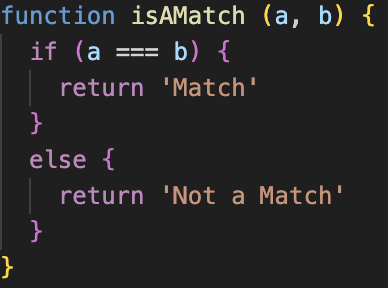
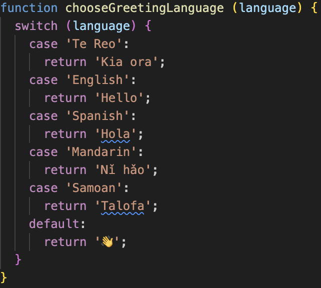
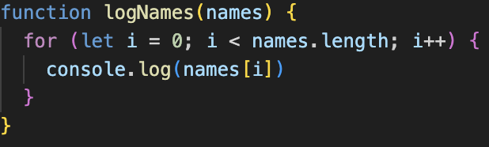
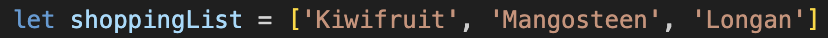
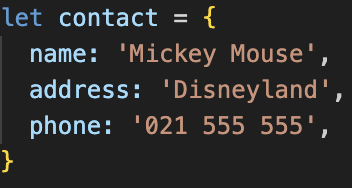

-
An analogy to describe JavaScript and its relationship to HTML and CSS.
Imagine a house: HTML is the structure and foundation of the house, and it defines the overall layout, walls, and rooms. CSS determines the styles and colors of the house; in simple terms, it adds aesthetics and interior design. Lastly, JavaScript is the functionality and brings the interaction aspect to the house, which brings the house to life. It is like people inside the house responding to events such as opening doors, switching the lights on and off, etc.
-
Explain control flow and loops using an example process from everyday life, for example, 'waking up' or 'brushing your teeth' (but not those).
Control flow is like a roadmap for your JavaScript code. It guides the computer on what to do next, whether it's making choices, repeating actions, or controlling the overall direction of your program. Loops are used to repeat a block of code multiple times to remove manual work or writing it again and again.
Control Flow and Loop Example:Imagine you are cooking a dish - tomato pasta, the recipe you follow, order of the steps and decisions you make and execute is similar to control flow.
- Start cooking pasta by chopping veggies
- Boil pasta
- Cook the chopped veggies
- If the veggies are cooked add boiled pasta
- Else keep cooking until they change color
- Once done, add boiled pasta
- Turn the stove off, enjoy!
IF/ELSEHere is one of the examples of key control flow statements. Imagining the same example from the above paragraph. Before addition of boiled pasta, I have to ensure that the tomato is cooked. So if the tomato is not cooked, cook for a little more time, otherwise continue the next step of adding pasta. This is an example of if-else statements.
SWITCHSwitch statement is used to do comparisons for the input value against the available expressions
FOR LOOPImagine you have a basket which contains 10 watermelons in it. I’m going to take the first watermelon, wipe it with the cloth, put it in the fridge and go back to the basket and then grab the second watermelon and repeat the process of the first watermelon. This is called for loop and you keep doing it until you reach the last watermelon.
WHILE LOOPImagine you are running on a track and there is a timer of 30 seconds, you can only run while the timer is below 30 seconds, once the timer crosses 30 seconds, you’ve got to stop. This is an example of a while loop.
SUMMARYIn short, both control flow and loops are tools essential in programming as they help to structure your code and execute in an efficient and logical manner.
-
Describe what the DOM is and an example of how you might interact with it.
DOM is the representation of all the HTML elements in a webpage, it helps you locate where each and every element is on a webpage like headers, divs, paragraphs etc. It represents objects and their connection to various other objects in the form of a tree.

Imagine a house, dom is the blueprint of the house where we can see where the different parts of the house are such as where the room is, or where the bathroom is, or where the kitchen is and how they are connected. Basically interacting with elements to know its locations in the house using the map. Similarly, in a browser, DOM can be considered as the blueprint of the website where you can access and manipulate your html and css elements. On this blueprint or map, each part of the website can be considered a node. The things like headings, paragraphs, buttons or images can be nodes. To add, find and change these nodes javascript can use the dom i.e., it can use the dom to hide an image, change the color of the heading, etc. DOM is a way for the javascript to control and interact with the elements in the webpage.

-
Explain the difference between accessing data from arrays and objects
Array can be called a list of ordered collections of elements where they are stored in specific order and the indexing of the first element starts from zero. Indexes can be used to access the specific element of the array.
Ex: [cat, rat, mat, bat, hat, pat] I think this is an array
Objects are the unordered collection of elements and they are stored in key-value pairs. They can be accessed by the property name to get a specific value in an object.
Ex: {name: mickey mouse, address: disneyland}
The key difference is that the arrays maintain order while the objects do not maintain them. Also, arrays use the indexes to access elements on the other hand objects use the property name. Lastly, the elements stored in the array can be of any data type but the objects stored in key-value pairs. The values can be any data type but the keys are strings.
-
Explain what functions are and why they are helpful.
Functions are the reusable chunks of code that perform specific tasks. To maintain and reuse, the code can be broken down to smaller pieces which allows easier understanding and manageability. Once you have defined a function, it can be used multiple times throughout coding. By giving meaningful names to specific tasks, it can improve the readability of your code. Also, it is easy to find where the problem is in the code when debugging. The functions are defined using the keyword “function”. They can take in the input parameters and return the values. They can also be passed as arguments to other functions or can be stored as variables. To write efficient, organized and manageable javascript code functions play an important role.